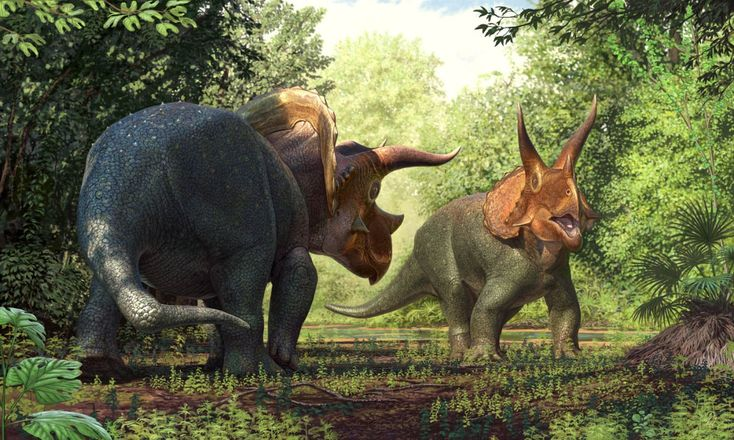
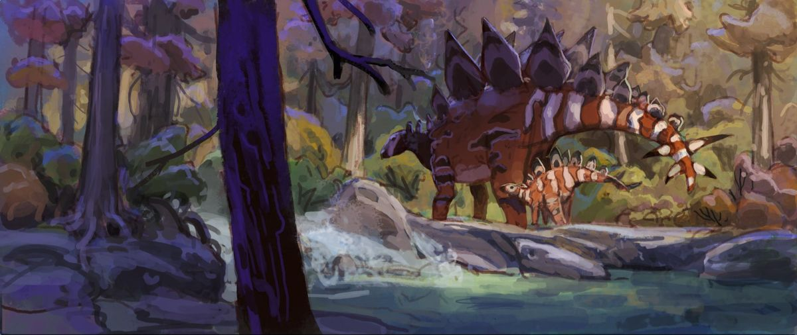
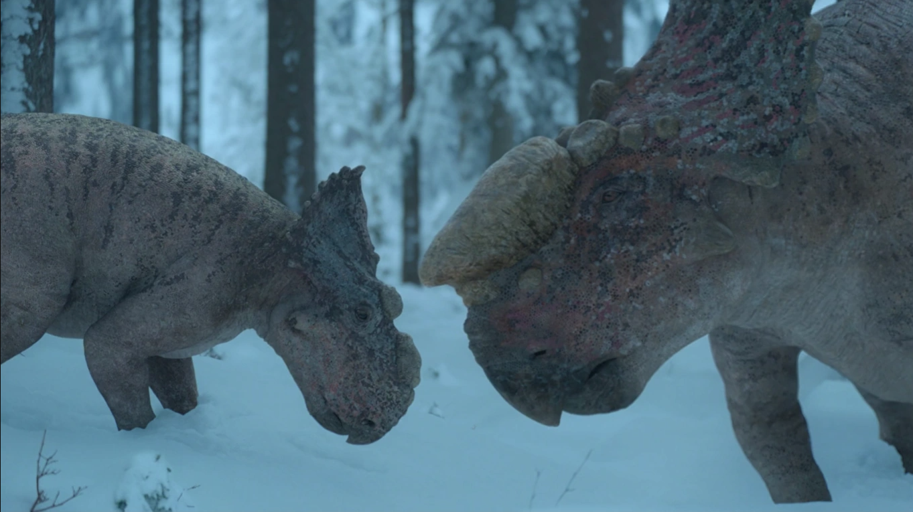
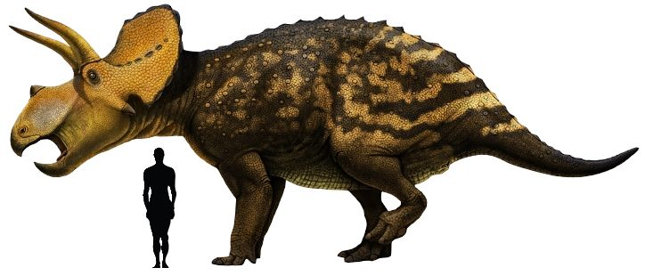
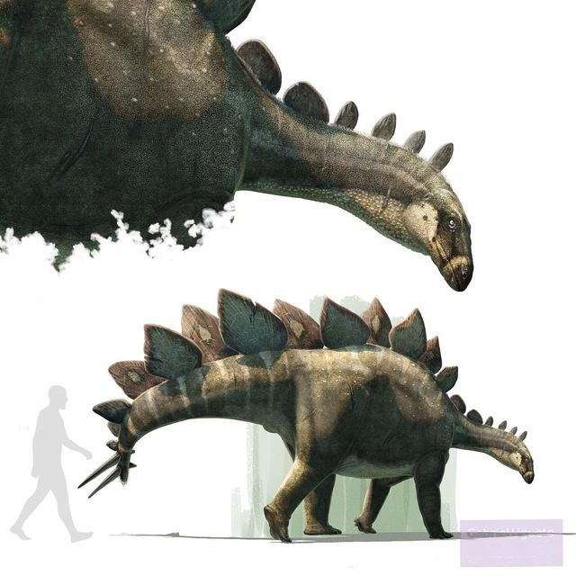
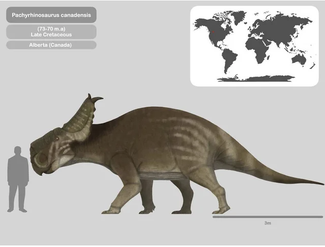
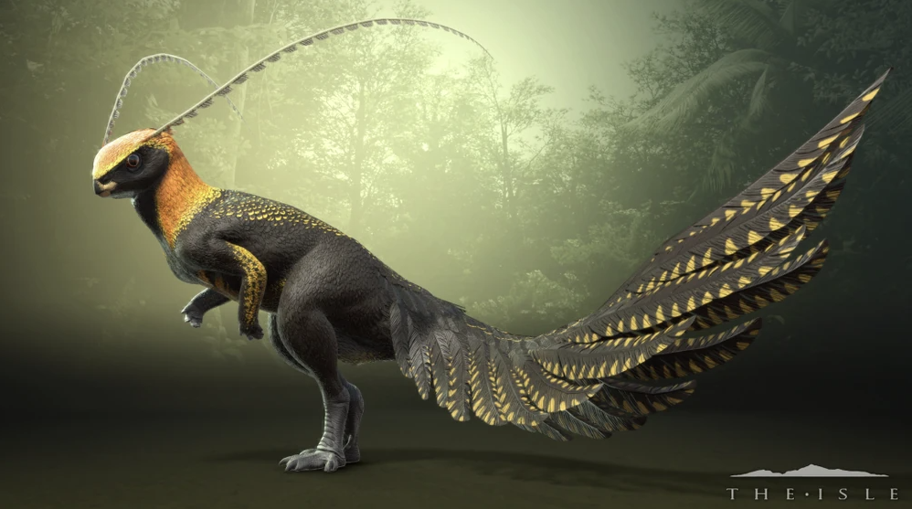
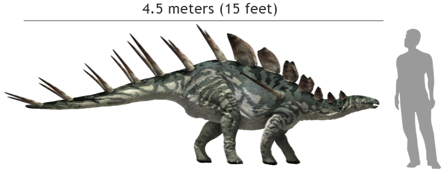

Triceratops

Stegosaurus

Ankylosaurus

Parasaurolophus

Iguanodon

Shantungosaurus

Pachycephalosaurus

Pachyrhinosaurus

Hypsilophodon

Kentrosaurus

Triceratops horridus
- Name: Triceratops horridus
- Diet: Herbivore
- Length: 8-9 m (26-30 ft)
- Height: ~2.5-3 m at hip (8-10 ft)
- Weight: 6-12 tonnes (6.6-13.2 short tons)
- Scientific Classification: Dinosauria; Ornithischia; Ceratopsia; Ceratopsidae; Chasmosaurinae; Triceratops
- Location / Formation: USA (Hell Creek, Lance, Scollard Formations)
- Time: Late Cretaceous (Maastrichtian), ~68-66 Ma

Overview
Triceratops is the most iconic and one of the last ceratopsian dinosaurs. Known for its massive skull featuring three horns and a solid bony frill, it was a powerful, rhino-like herbivore and a contemporary and likely prey item of Tyrannosaurus rex at the very end of the Cretaceous.
Discovery
The first known specimen was a pair of brow horns found near Denver, Colorado, in 1887, which were initially mistaken for those of a giant bison. Othniel Charles Marsh formally named Triceratops horridus ("horrid three-horned face") in 1889. Hundreds of specimens have since been found, making it one of the most common and well-known dinosaurs from its time.
Evolution
Triceratops is a highly derived member of the Chasmosaurinae, a subfamily of ceratopsids typically characterized by large frills with open fenestrae (windows). Interestingly, Triceratops evolved a solid frill, a feature more common in the other subfamily, Centrosaurinae. It represents the culmination of ceratopsian evolution in terms of size and robustness just before the K-Pg extinction.
Physical Description
Its most prominent feature was its enormous skull, which could reach over 2.5 meters in length, making it one of the largest skulls of any land animal. It bore a short nose horn and two long, robust brow horns. The solid bone frill extended from the back of the skull. Its body was barrel-shaped and elephantine, with four sturdy, column-like legs.
Ecology
It inhabited the coastal floodplains of western North America, likely living in herds for protection. Its jaws were tipped with a sharp beak for cropping vegetation, followed by batteries of shearing teeth for processing tough, fibrous plants like palms and cycads. Its horns and frill were used primarily for defense against predators like T. rex and for intraspecific combat and display, with fossil evidence showing healed horn injuries.
Extinction Legacy
Triceratops is a cornerstone of dinosaur paleontology and pop culture. Its three-horned face is instantly recognizable worldwide. As one of the last non-avian dinosaurs, its fossils are crucial for understanding the final dinosaur communities on Earth. The ongoing debate about whether Torosaurus is a mature growth stage of Triceratops makes it central to studies of dinosaur ontogeny and taxonomy.
Stegosaurus stenops
- Name: Stegosaurus stenops
- Diet: Herbivore
- Length: 7-9 m (23-30 ft)
- Height: ~3.5-4 m at hip (11.5-13 ft)
- Weight: 4-5 tonnes (4.4-5.5 short tons)
- Scientific Classification: Dinosauria; Ornithischia; Stegosauria; Stegosauridae; Stegosaurus
- Location / Formation: USA (Morrison Formation)
- Time: Late Jurassic (Kimmeridgian-Tithonian), ~155-150 Ma

Overview
Stegosaurus is the archetypal plated dinosaur, famous for the distinctive double row of large, kite-shaped bony plates along its back and the lethal pair of spikes (the "thagomizer") on its tail. It is one of the most easily identifiable dinosaurs and a hallmark of the Jurassic Period.
Discovery
The first fossils were discovered during the "Bone Wars" of the late 19th century. Othniel Charles Marsh named Stegosaurus armatus in 1877, though the more complete S. stenops (described in 1887) is now the type species. Early reconstructions placed the plates flat on its back like shingles; their correct upright, alternating arrangement was determined later.
Evolution
Stegosaurus is the namesake of the Stegosauria, a group of thyreophoran dinosaurs characterized by rows of plates and spikes. It is one of the largest and last members of this lineage, which was more diverse in the Early to Middle Jurassic. Stegosaurs were largely replaced by ankylosaurs in the Cretaceous.
Physical Description
Stegosaurus had a small, low-slung head with a simple, beaked mouth and weak teeth, suggesting it ate soft vegetation. Its forelimbs were much shorter than its hindlimbs, giving it a characteristic, low-slung posture with its head close to the ground and its hips held high. Its most famous features were the 17-22 large, thin, upright plates (likely covered in keratin for color) and the four, muscularly controlled tail spikes.
Ecology
It was a low-level browser in the semi-arid floodplains of the Morrison Formation, likely feeding on ferns, cycads, and low-growing shrubs. Its plates are now thought to have served primarily for display and thermoregulation (as radiators). The thagomizer, however, was a formidable defensive weapon, capable of delivering powerful, swinging blows to the legs of predators like Allosaurus, as evidenced by tail-spike injuries found in allosaur vertebrae.
Extinction Legacy
Stegosaurus is a cultural icon of the dinosaur world and a primary example of bizarre dinosaurian morphology. It has driven scientific debates on function (plates for defense, display, or thermoregulation?), posture, and intelligence (it famously had a brain the size of a walnut). It remains the definitive example of the stegosaur group and a testament to the strange and wonderful forms evolution can produce.
Ankylosaurus magniventris
- Name: Ankylosaurus magniventris
- Diet: Herbivore
- Length: 6-8 m (20-26 ft)
- Height: ~1.7 m at hip (5.6 ft)
- Weight: 4.8-8 tonnes (5.3-8.8 short tons)
- Scientific Classification: Dinosauria; Ornithischia; Ankylosauria; Ankylosauridae; Ankylosaurinae; Ankylosaurus
- Location / Formation: USA & Canada (Hell Creek, Lance, Scollard Formations)
- Time: Late Cretaceous (Maastrichtian), ~68-66 Ma

Overview
Ankylosaurus is the archetypal armored dinosaur, famous for its heavy, bony plates and massive tail club. As one of the last and largest of the ankylosaurids, it was a walking fortress and a contemporary of Tyrannosaurus rex, representing the peak of thyreophoran (shield-bearing) dinosaur defense.
Discovery
The first fossil remains (skull fragments, vertebrae, ribs, and armor) were discovered in 1906 by Barnum Brown in the Hell Creek Formation of Montana. Brown described the genus and species, Ankylosaurus magniventris ("great-bellied fused lizard"), in 1908. Due to its rare and fragmentary fossils, its full appearance has been reconstructed based on more complete relatives.
Evolution
Ankylosaurus is the namesake of the Ankylosauridae family, a derived group within the Ankylosauria. It was among the last surviving members of a lineage that had been globally successful since the Jurassic. Its evolution perfected the "tank" body plan, with extensive dermal armor, a broad, low-slung body, and a weaponized tail.
Physical Description
Its body was covered in thick, oval osteoderms (bony plates) fused into the skin, with rows of spikes along its sides. Its skull was wide, low, and heavily reinforced, with two pairs of horns at the back. Its most iconic weapon was a massive, bony club at the end of its tail, formed from fused osteoderms and swung by powerful tail muscles. Its build was broad and squat, with short, powerful limbs.
Ecology
This dinosaur inhabited forested coastal floodplains. It was a low-level browser, using its simple, leaf-shaped teeth to crop ferns and low-growing vegetation. Its size and armor made it virtually impervious to predators as an adult. The tail club was a powerful defensive weapon capable of shattering the bones of a predator's leg or skull, serving as a potent deterrent to even the largest theropods.
Extinction Legacy
Ankylosaurus is the ultimate symbol of dinosaurian defense. Its formidable appearance has made it a staple of popular dinosaur media. Scientifically, it represents the final, most heavily armored stage of ankylosaurid evolution. Its rare fossils are key to understanding the diversity of the last dinosaur ecosystems, and its tail club remains one of the most impressive specialized weapons in the animal kingdom.
Parasaurolophus walkeri
- Name: Parasaurolophus walkeri
- Diet: Herbivore
- Length: 9-10 m (30-33 ft)
- Height: ~2.5 m at hip (8 ft)
- Weight: 2.5-3 tonnes (2.8-3.3 short tons)
- Scientific Classification: Dinosauria; Ornithischia; Ornithopoda; Hadrosauridae; Lambeosaurinae; Parasaurolophus
- Location / Formation: Canada (Dinosaur Park Formation)
- Time: Late Cretaceous (Campanian), ~76.5-75 Ma

Overview
Parasaurolophus is one of the most visually striking dinosaurs, instantly recognizable by its long, curved, tubular cranial crest that extends backward from its skull. This hadrosaur, or "duck-billed dinosaur," is a classic example of elaborate dinosaur ornamentation and is famed for the potential musical function of its crest.
Discovery
The first specimen was discovered in 1920 in Alberta, Canada, by a field party from the University of Toronto. It was named and described by William Parks in 1922. The name means "like Saurolophus" (another crested dinosaur), due to an initial mistaken belief that their crests were similar. Several well-preserved skulls have been found.
Evolution
Parasaurolophus is a member of the Lambeosaurinae, the subfamily of hadrosaurs characterized by hollow, bony cranial crests. Its extremely long, tubular crest represents one of the most extreme specializations within this group, which evolved complex crests likely used for communication, display, and possibly thermoregulation.
Physical Description
Its most prominent feature was its long, backward-curving crest, which contained nasal passages that looped from the nostrils up to the tip of the crest and back down to the throat. It had a typical hadrosaur body: bipedal/quadrupedal, with a long, stiff tail for balance, and a broad, toothless beak followed by complex dental batteries for grinding plants.
Ecology
It lived in lush, riverine environments. As a hadrosaur, it was a highly efficient herbivore capable of processing a wide variety of vegetation. The hollow crest is hypothesized to have been a resonating chamber, allowing it to produce low-frequency sounds for communication within herds, possibly for signaling danger or mating. The crest also may have served as a visual display structure.
Extinction Legacy
Parasaurolophus is an icon of dinosaur weirdness and a key subject in paleobiological studies. Its crest has been the focus of extensive research in biomechanics and paleoacoustics, with scientists creating physical and digital models to recreate its possible sounds. It stands as a prime example of how dinosaurs used sophisticated structures for social communication, bringing their ancient world to life in a unique and audible way.
Iguanodon bernissartensis
- Name: Iguanodon bernissartensis
- Diet: Herbivore
- Length: ~9-10 m (30-33 ft)
- Height: ~2.5-3 m at hip (8-10 ft)
- Weight: 3-4 tonnes (3.3-4.4 short tons)
- Scientific Classification: Dinosauria; Ornithischia; Ornithopoda; Iguanodontia; Iguanodontidae; Iguanodon
- Location / Formation: Belgium, England, Germany (Wealden Group)
- Time: Early Cretaceous (Barremian-Aptian), ~126-122 Ma

Overview
Iguanodon was one of the first dinosaurs ever scientifically recognized and named. It is a historically monumental genus that helped shape early understanding of dinosaurs as large, unique reptiles. Known for its versatile thumb spike and shift from bipedal to quadrupedal posture, it was a dominant, successful herbivore of the Early Cretaceous.
Discovery
The first teeth were discovered in England in 1822 by Mary Ann Mantell and identified by her husband, Gideon Mantell, who named it Iguanodon ("iguana tooth") in 1825. The landmark discovery came in 1878 in a Belgian coal mine at Bernissart, where over 30 nearly complete skeletons were unearthed, providing the first complete picture of a large dinosaur.
Evolution
Iguanodon is the type genus for the Iguanodontia, a major group of ornithopods that were precursors to the later hadrosaurs. It represents a key transitional form in ornithopod evolution, more derived and larger than earlier forms like Hypsilophodon, but lacking the advanced dental batteries and complex crests of the hadrosaurs.
Physical Description
Iguanodon had a robust body capable of moving on two or four legs. Its head featured a broad, toothless beak for cropping plants and batteries of tightly packed cheek teeth for grinding. Its most famous feature was a large, conical thumb spike on each hand, originally mistaken for a nose horn. This spike was likely used for defense, foraging, or intraspecific combat. Its stiff tail provided balance when bipedal.
Ecology
It inhabited forested floodplains and coastal regions of Europe. As a generalist herbivore, it could browse on a wide variety of vegetation from ground level to several meters high. Its ability to shift between bipedal and quadrupedal stances gave it great feeding flexibility. It likely lived in herds, as suggested by the mass burial at Bernissart.
Extinction Legacy
Iguanodon holds an irreplaceable place in the history of science. The Bernissart skeletons were mounted in life-like, active poses at the Royal Belgian Institute of Natural Sciences, revolutionizing public and scientific perception of dinosaurs. It was one of the three genera used to define Dinosauria. Its story is foundational to paleontology.
Shantungosaurus giganteus
- Name: Shantungosaurus giganteus
- Diet: Herbivore
- Length: 14.7-16.6 m (48-54 ft)
- Height: ~5-6 m at hip (16-20 ft)
- Weight: 13-16 tonnes (14-18 short tons)
- Scientific Classification: Dinosauria; Ornithischia; Ornithopoda; Hadrosauridae; Saurolophinae; Shantungosaurus
- Location / Formation: China (Wangshi Group)
- Time: Late Cretaceous (Campanian), ~83-76 Ma

Overview
Shantungosaurus is the largest known hadrosaurid, or "duck-billed dinosaur," and one of the largest ornithischian dinosaurs ever discovered. This Asian giant was a colossal, flat-headed herbivore that represents the extreme of size achievable within the hadrosaur family.
Discovery
The first fossils were discovered in the 1960s in Shandong Province, China. It was formally described in 1973 by Chinese paleontologist Hu Chengzhi. The holotype consists of a partial but very large skeleton. Subsequent discoveries have provided more material, solidifying its status as a behemoth.
Evolution
Shantungosaurus is a member of the Saurolophinae (or Hadrosaurinae), the subfamily of hadrosaurs that typically lacked hollow crests. It is closely related to North American hadrosaurs like Edmontosaurus, but evolved to a much larger size in Asia. Its gigantism demonstrates convergent evolution, as titanosaur sauropods, the other group of super-large herbivores, were rare in its ecosystem.
Physical Description
It had the classic hadrosaur build but on a gargantuan scale: a broad, flat head with a toothless duck-like beak, powerful jaws with immense dental batteries containing over 1,500 teeth, a deep, barrel-shaped torso, and strong limbs. Its tail was long and stiff. Unlike its lambeosaurine relatives, it lacked a bony cranial crest, though it may have had a fleshy comb.
Ecology
This giant inhabited floodplain environments. Its size would have been its primary defense against contemporary predators like tyrannosaurids. As a hadrosaur, it was an incredibly efficient processor of tough, fibrous vegetation. Its sheer mass and herd behavior (suggested by bonebeds) would have made it a major force in its ecosystem, consuming vast amounts of plant matter and shaping the landscape.
Extinction Legacy
Shantungosaurus redefines the upper limits of hadrosaur size. It proves that ornithischian dinosaurs could rival medium-sized sauropods in mass, filling a similar mega-herbivore niche in ecosystems where sauropods were absent or declining. It is a keystone genus for understanding Late Cretaceous Asian dinosaur communities and the evolutionary potential of hadrosaurs.
Pachycephalosaurus wyomingensis
- Name: Pachycephalosaurus wyomingensis
- Diet: Herbivore/Omnivore
- Length: ~4.5 m (15 ft)
- Height: ~1.5-2 m at hip (5-6.5 ft)
- Weight: ~370-450 kg (820-990 lbs)
- Scientific Classification: Dinosauria; Ornithischia; Pachycephalosauria; Pachycephalosauridae; Pachycephalosaurus
- Location / Formation: USA (Hell Creek, Lance Formations)
- Time: Late Cretaceous (Maastrichtian), ~70-66 Ma

Overview
Pachycephalosaurus is the largest and most famous of the "bone-headed" dinosaurs, instantly recognizable by its incredibly thick, dome-shaped skull roof. This unique structure has long been at the center of debates about dinosaur behavior, specifically regarding head-butting combat.
Discovery
The first fragmentary remains were described as early as 1859. The iconic dome was found in 1938 in Wyoming and studied by Charles W. Gilmore, who named the new species Pachycephalosaurus grangeri. The species P. wyomingensis was named earlier, in 1931, based on a smaller spike. Later research consolidated these into the single species P. wyomingensis.
Evolution
Pachycephalosaurus is the namesake of the Pachycephalosauria, a group of bipedal ornithischians within the larger Marginocephalia clade (which also includes ceratopsians). It represents the pinnacle of the trend toward extreme cranial dome thickening seen in this lineage, which evolved over the course of the Cretaceous period.
Physical Description
Its most prominent feature was a solid, bony dome atop its skull, up to 25 cm (10 inches) thick. The dome was surrounded by a ring of bony knobs and spikes at the rear. It had a short snout with a pointed beak and small, leaf-shaped teeth. It was bipedal, with a stout body, strong hind limbs, and a heavy, rigid tail likely used for balance.
Ecology
It lived in coastal floodplain forests. Its diet is debated; its small teeth suggest it ate a mix of plants, seeds, fruits, and possibly insects. The function of its dome is iconic. While once thought to be used for dramatic head-to-head ramming like bighorn sheep, current research suggests the dome and neck structure were better suited for flank-butting (hitting the side of an opponent) or for display and species recognition, with injuries on domes supporting some form of combat.
Extinction Legacy
Pachycephalosaurus is the definitive "dome-headed" dinosaur and a staple of popular dinosaur lore. It has driven extensive research into dinosaur biomechanics, behavior, and intraspecific combat. The debate over its head-butting behavior is a classic case study in paleobiological inference, demonstrating how scientists interpret function from form.
Pachyrhinosaurus canadensis
- Name: Pachyrhinosaurus canadensis
- Diet: Herbivore
- Length: 6-8 m (20-26 ft)
- Height: ~2-2.5 m at hip (6.5-8 ft)
- Weight: 2-4 tonnes (2.2-4.4 short tons)
- Scientific Classification: Dinosauria; Ornithischia; Ceratopsia; Ceratopsidae; Centrosaurinae; Pachyrhinosaurus
- Location / Formation: Canada (Horseshoe Canyon, St. Mary River Formations)
- Time: Late Cretaceous (Campanian-Maastrichtian), ~73.5-69 Ma

Overview
Pachyrhinosaurus is a distinctive centrosaurine ceratopsian famous for replacing the large nasal horn common in its relatives with a massive, flattened, bony boss (or "pads") on its nose and above its eyes. It was a herd-dwelling herbivore known from spectacular bonebeds containing thousands of individuals.
Discovery
The first fossils were discovered in 1946 by Charles M. Sternberg in Alberta, Canada. It was described in 1950 by Sternberg. The most significant discoveries came decades later with the uncovering of immense bonebeds in Alberta (the Pipestone Creek and Wapiti River beds) and Alaska, which have yielded a wealth of information on growth, variation, and herd structure.
Evolution
Pachyrhinosaurus is a highly derived member of the Centrosaurinae, the subfamily of ceratopsids known for elaborate nasal horns and ornate frills. It represents an evolutionary departure where the horns were replaced by rough, thickened bosses, which may have supported keratinous pads or structures. Three species are recognized, showing variation in boss and frill ornamentation.
Physical Description
It had a large skull with a prominent, flattened nasal boss and a separate boss over each eye. Its frill was large and decorated with an array of horns, spikes, and curl-like processes, with patterns unique to each species. Like all ceratopsids, it had a parrot-like beak, shearing dental batteries, a bulky body, and quadrupedal posture.
Ecology
It inhabited coastal plain and river delta environments, migrating in enormous herds, as evidenced by the mass death assemblages. It was a low-level browser, cropping vegetation with its beak. The bony facial bosses were likely used for head-pushing or flank-butting contests within the herd for dominance or mating rights, with the frill serving as a display structure.
Extinction Legacy
The immense bonebeds of Pachyrhinosaurus have made it one of the best-understood ceratopsians. They provide unparalleled insight into ceratopsian social behavior, population dynamics, growth, and paleopathology. Its unique "boss-faced" anatomy demonstrates the diversity of structures within horned dinosaurs and has made it a popular subject in modern documentaries and media.
Hypsilophodon foxii
- Name: Hypsilophodon foxii
- Diet: Herbivore
- Length: 1.5-2 m (5-6.5 ft)
- Height: ~0.5 m at hip (1.6 ft)
- Weight: 20 kg (44 lbs)
- Scientific Classification: Dinosauria; Ornithischia; Ornithopoda; Hypsilophodon
- Location / Formation: England (Wessex Formation)
- Time: Early Cretaceous (Barremian), ~130-125 Ma

Overview
Hypsilophodon was a small, agile, and primitive ornithopod dinosaur. For much of the 20th century, it was famously and incorrectly hypothesized to be a tree-climbing dinosaur. It is now understood as a swift, ground-dwelling herbivore, a classic example of a small, cursorial dinosaur that filled an ecological niche similar to a deer or antelope.
Discovery
The first remains were discovered in 1849 on the Isle of Wight. Initially, it was misidentified as a young Iguanodon. It was given its own name, Hypsilophodon foxii, in 1869 by the influential paleontologist Thomas Huxley. The species name honors the Reverend William Fox, a key fossil collector on the Isle of Wight.
Evolution
Hypsilophodon is a basal (early) member of the Ornithopoda, the group that would later give rise to the giant iguanodonts and hadrosaurs. It lies outside the more derived Iguanodontia, representing a conservative, small-bodied lineage that persisted from the Late Jurassic into the Early Cretaceous with a relatively unchanged body plan.
Physical Description
It was a lightly built, bipedal dinosaur built for speed. It had long, slender hind limbs, a stiffened tail for balance, and shorter arms with five-fingered hands. Its skull was small with a horny beak at the front and cheek teeth adapted for grinding plant material. Its most notable feature was its feet, which had four toes; the structure of these toes led to the mistaken tree-climbing theory.
Ecology
Hypsilophodon lived in the forested floodplains and lagoonal environments of the Wessex Formation. Its anatomy indicates it was a fast runner, likely using speed and agility as its primary defense against contemporary predators like Neovenator. It was a selective browser, feeding on low-growing ferns, cycads, and possibly the newly evolving flowering plants (angiosperms).
Extinction Legacy
Hypsilophodon is historically significant for correcting a major misconception about dinosaur behavior and ecology. The rejection of the "tree-dwelling dinosaur" hypothesis in the 1970s was an important step in re-evaluating dinosaurs as dynamic, terrestrial animals. Today, it serves as the model for understanding small, agile, basal ornithopods.
Kentrosaurus aethiopicus
- Name: Kentrosaurus aethiopicus
- Diet: Herbivore
- Length: 4-5 m (13-16.5 ft)
- Height: ~1.5 m at hip (5 ft)
- Weight: 700-1,600 kg (1,500-3,500 lbs)
- Scientific Classification: Dinosauria; Ornithischia; Stegosauria; Stegosauridae; Kentrosaurus
- Location / Formation: Tanzania (Tendaguru Formation)
- Time: Late Jurassic (Kimmeridgian-Tithonian), ~155-150 Ma

Overview
Kentrosaurus is a smaller, African relative of Stegosaurus, famed for its impressive and numerous defensive spikes. While it had small plates on its neck and shoulders, its primary armament was a pair of long shoulder spikes and a tail adorned with multiple pairs of large, lethal spikes, making it one of the most formidable-looking stegosaurs.
Discovery
Discovered in the prolific Tendaguru fossil beds of German East Africa (now Tanzania) between 1909 and 1912 by German paleontologist Edwin Hennig. The name, meaning "spiked lizard," was given in 1915. Hundreds of bones were recovered, though a complete, articulated skeleton has never been found, leading to some debate over the exact arrangement of its plates and spikes.
Evolution
Kentrosaurus is a member of the Stegosauridae, closely related to but more primitive than Stegosaurus. It represents a different morphological strategy within the family, emphasizing long, sharp spikes over broad, upright plates for defense and display. This highlights the diversity within stegosaurs, which had a near-global distribution during the Jurassic.
Physical Description
It had a typical stegosaur body plan: a small head, long, low-slung torso, short forelimbs, and a posture with the hips much higher than the shoulders. Along its neck and anterior back were small, oval plates. On its shoulders sat a pair of long, forward-pointing spikes. The latter half of its back and tail bore at least five pairs of large, sharp spikes (up to 60 cm long), with the tail likely ending in a Stegosaurus-style "thagomizer" of two pairs.
Ecology
It inhabited the coastal mangrove and lagoon environments of the Tendaguru Formation, which was rich in giant sauropods like Giraffatitan. As a low browser, it fed on ground vegetation. Its array of spikes provided formidable passive defense. The shoulder spikes could deter frontal attacks, while the tail was a highly flexible, active weapon that could be swung with great force at the legs of large predators like Allosaurus or Ceratosaurus.
Extinction Legacy
Kentrosaurus is a classic example of the unique dinosaur fauna found in the Tendaguru beds, which paralleled the Morrison Formation of North America. Its spiky appearance makes it a fan favorite and a key genus for understanding stegosaur diversity and defensive adaptations. It demonstrates that even within a single family, dinosaurs could evolve dramatically different solutions to the same problems of defense and display.